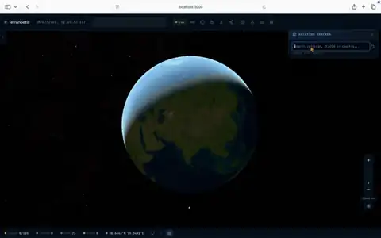
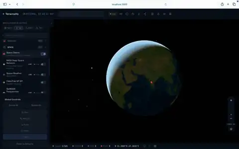

The Terranoetis Visual Gallery showcases actual renderings, simulation timesteps, and spatial analysis fields generated by the platform. These exhibits demonstrate the multi-hazard risk fusion, physical simulation kernels, orbital satellite tracking, and global aviation monitoring running on the WebGL globe.
Multi-hazardCausal CBNIDW Surface
Multi-hazard risk surface fusion
Continuous spatial risk surfaces dynamically fused from live seismic events, thermal wildfire anomalies, storm paths, and hydrological flooding. Discrete hazard indicators are continuously synthesized into a probabilistic risk field on the 3D globe.
LandslideVoellmy–SalmNumPy
Landslide debris-flow propagation
Depth-averaged Voellmy–Salm numerical debris-flow model simulating avalanche and mudflow runout across real digital elevation models. Visualizes deposit depth, fluid momentum, and terminal runout extent.

AviationOpenSky ADS-BDead reckoning
Live aviation tracking & flight paths
Real-time commercial and military flight tracking fed by OpenSky Network ADS-B telemetry. Positions are projected along great-circle trajectories using dead-reckoning vectors, color-coded by barometric flight level bands.

SatellitesSGP4 / SDP4CelesTrak TLE
Satellite constellation & debris orbits
High-precision SGP4/SDP4 analytical orbit propagation calculating real-time satellite positions, nadir ground tracks, and sensor coverage footprints from CelesTrak and UCS orbital element sets.
Rotorcraft6-DOF dynamicsApache glTF
AH-64 Apache flight dynamics simulation
Six-degree-of-freedom rotorcraft dynamics model with collective, cyclic, and anti-torque pedal controls. Features ground effect modeling, vortex ring state boundaries, procedural glTF articulation, and projected glass cockpit MFD displays.